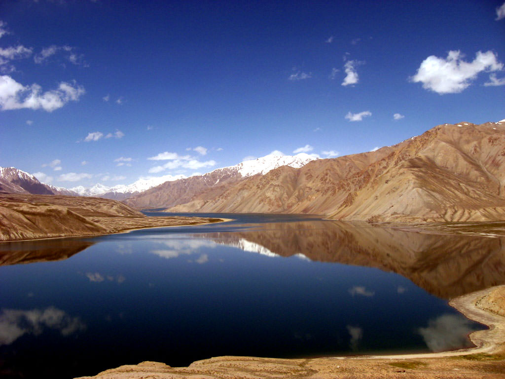

×

Tajikistan
Флаг
Государственный флаг Республики Таджикистан представляет собой прямоугольное полотнище, состоящее из трёх горизонтальных полос: верхней — красной, средней — белой и нижней — зелёной в соотношении между собой по ширине как 2:3:2. В центре флага изображена золотая стилизованная корона с полукругом из семи пятиконечных звёзд над ней.
Корона и полукруг из звёзд вписываются в прямоугольник, длина которого равна ширине белой полосы, а высота которого равна 4/5 ширины белой полосы. Пятиконечные звезды вписываются в условные окружности диаметром 3/20 ширины белой полосы и расположены по дуге условной окружности радиусом 1/2 ширины белой полосы.
Корона высотой 0,55 ширины белой полосы прогибается в основании по дуге радиусом 1,2 ширины белой полосы. Четыре дугообразных элемента, формирующие верх короны, венчаются в центре частью круга диаметром 0,2 ширины белой полосы.
Герб
Государственный герб Республики Таджикистан представляет собой изображение стилизованной короны и полукруга из семи звёзд на ней в лучах солнца, восходящего из-за гор, покрытых снегом и обрамлённых венком, составленным справа из колосьев пшеницы, слева из веток хлопчатника с раскрытыми коробочками. Сверху венок перевит трёхполосной лентой, в нижнем секторе помещена книга на подставке.
Кроме черно-белого и цветного изображений герба Таджикистана официальным является и так называемое объёмное изображение герба (цвета герба представлены как градиентные).
____